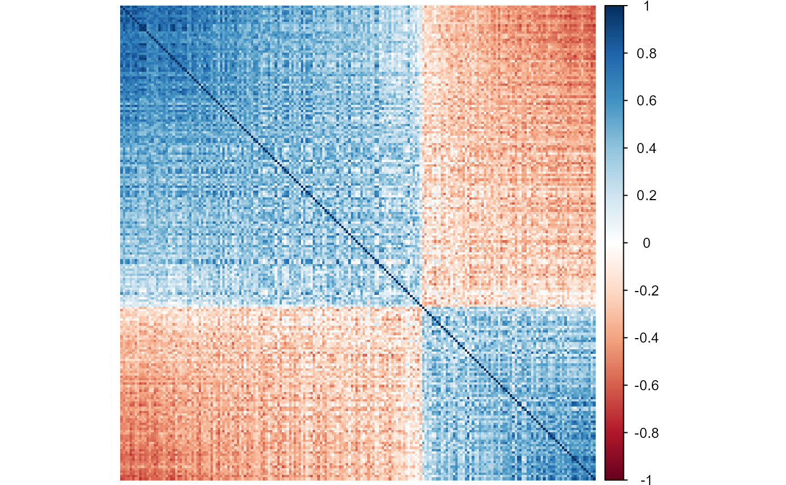
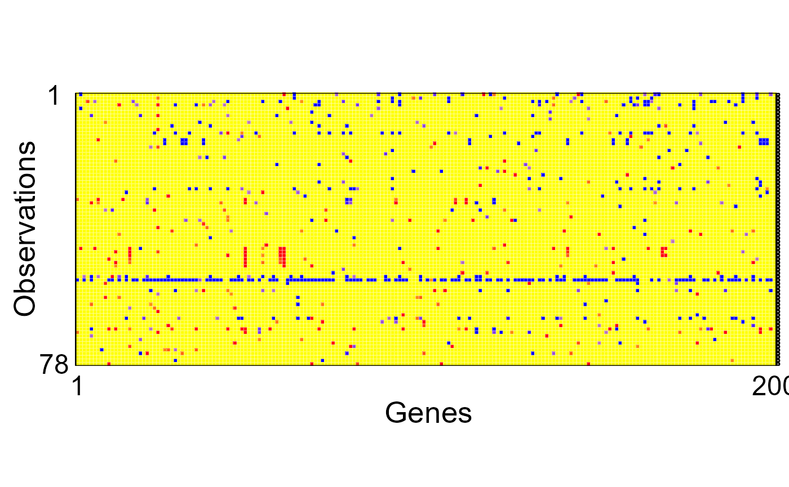

breastcancer.Rmd
#remotes::install_github("PengSU517/robcovsel")
#remotes::install_github("PengSU517/shootings") !!!!!!!!!!!!!!
#This shootings package is not my original work. The functions in this package were forked from https://github.com/ineswilms/sparse-shooting-S. I constructed a package of those functions to make them more convenient to use.
library(robcovsel)
library(tidyverse)
#> ── Attaching packages ─────────────────────────────────────── tidyverse 1.3.1 ──
#> ✓ ggplot2 3.3.5 ✓ purrr 0.3.4
#> ✓ tibble 3.1.5 ✓ dplyr 1.0.7
#> ✓ tidyr 1.1.4 ✓ stringr 1.4.0
#> ✓ readr 2.0.2 ✓ forcats 0.5.1
#> ── Conflicts ────────────────────────────────────────── tidyverse_conflicts() ──
#> x dplyr::filter() masks stats::filter()
#> x dplyr::lag() masks stats::lag()
library(robustHD) #sparse LTS
#> Loading required package: perry
#> Loading required package: parallel
#> Loading required package: robustbase
library(shootings) # sparse shooting S
library(cellWise)
library(corrplot)
#> corrplot 0.90 loaded
# rm(list = ls()) # clean slate
# setwd(dirname(rstudioapi::getSourceEditorContext()$path))
y = breastcancer_screened$dat.surtime
x = breastcancer_screened[,c(-1,-2)]
corrs = covf(as.matrix(x), scale.method = "qn", cor.method = "pair", pda.method = F)$cormatrix
corrplot(corrs, method = "shade",shade.col = NA, tl.col ="black", tl.srt = 45, order = "FPC",tl.cex = 0.01)
fit1 <- DDC(x)
#>
#> The input data has 78 rows and 200 columns.
cellMap(fit1$remX, fit1$stdResid, columnlabels = c(1,rep(" ",198),200), rowlabels = c(1,rep(" ",76),78), columnangle = 0,
rowtitle = "Observations", columntitle = "Genes", sizetitles = 2,adjustrowlabels = 0.5, adjustcolumnlabels = 0.5)
#ggsave("breastcancer.eps",width = 12,height = 6)
x = x[,sort(names(x))]
lassofit = covlasso(x,y,cor.method = "pearson", scale.method = "sd", adaptive = F)
sLTSfit = sparseLTS(x,y)
sssfit = sparseshooting(as.matrix(x),y)
pairfit = covlasso(x,y,cor.method = "pair", scale.method = "qn",adaptive = T)
gaussrankfit = covlasso(x,y,cor.method = "gaussrank", scale.method = "qn", adaptive = T)
rst = t(plyr::rbind.fill(list(
lasso = data.frame(t(sort(names(x)[as.logical(lassofit$betahat_opt)]))),
slts = data.frame(t(sort(names(x)[as.logical(sLTSfit$coefficients[-1])]))),
sss = data.frame(t(sort(names(x)[as.logical(sssfit$coef[-1])]))),
gaussrank = data.frame(t(sort(names(x)[as.logical(gaussrankfit$betahat_opt)]))),
pair = data.frame(t(sort(names(x)[as.logical(pairfit$betahat_opt)])))
)))
colnames(rst) = c("Lasso", "sLTS", "sShootingS", "ALGR", "ALRP")
# save(rst,"breastcancer_result.Rdata")